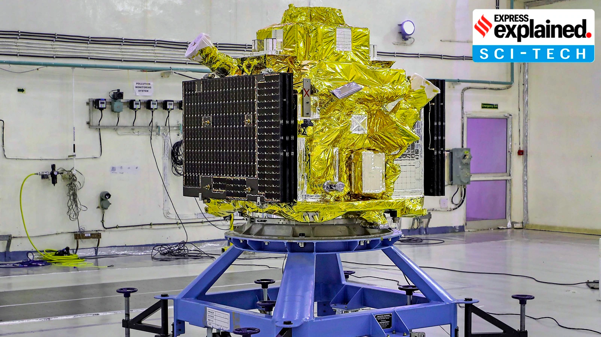
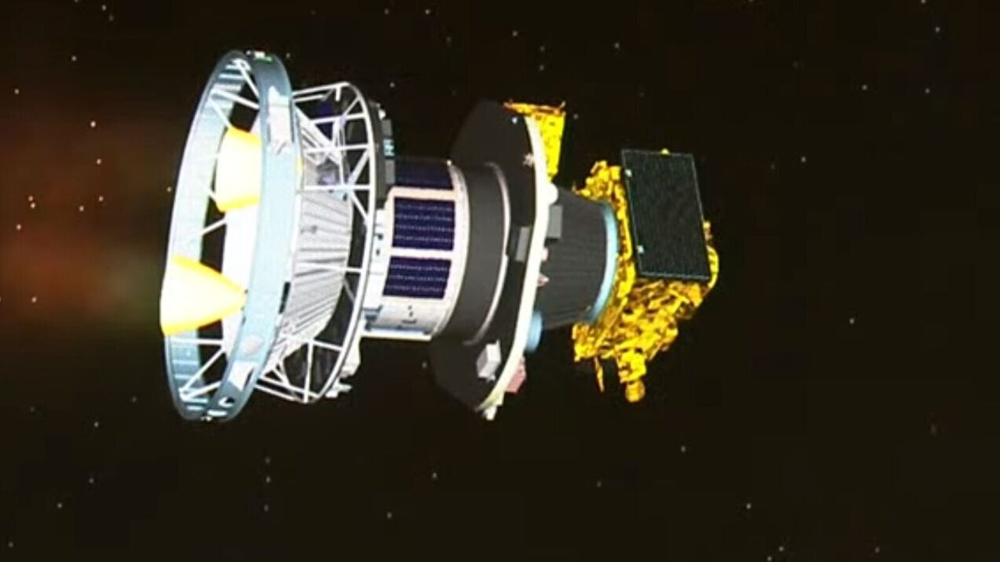
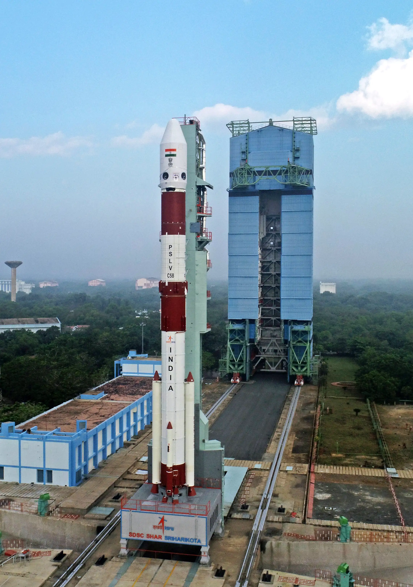
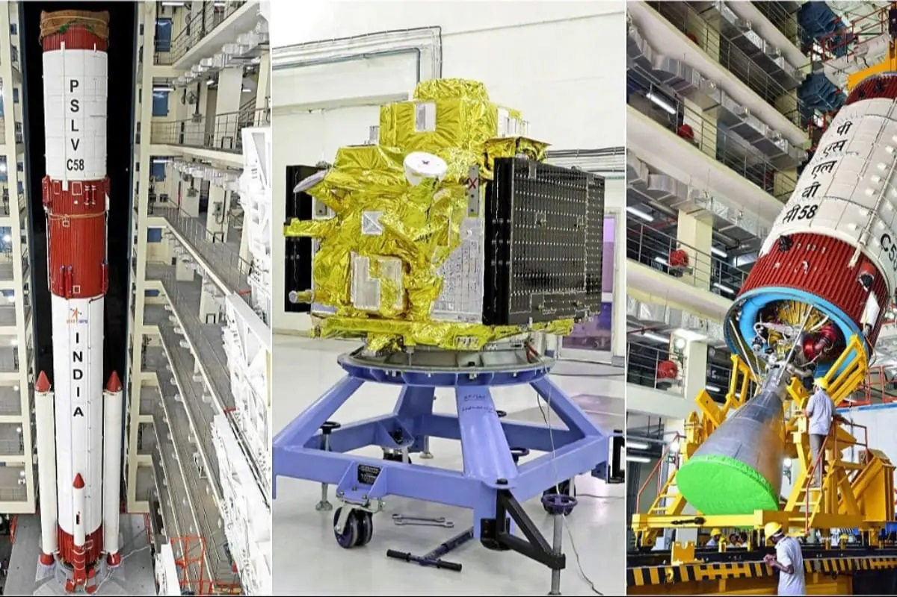
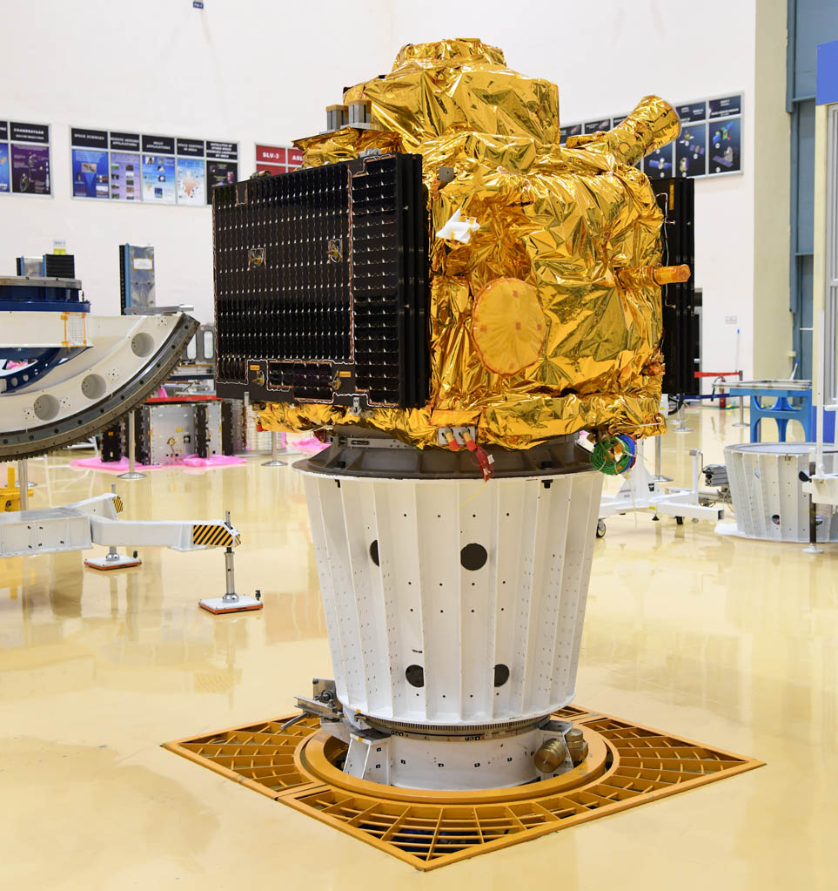

India's first X-ray polarimetry mission — and only the second in the world. XPoSat studies black holes, neutron stars, and pulsar wind nebulae in a way no other observatory can: by measuring the polarisation of X-rays, revealing the geometry and physics of the most extreme environments in the universe.
Watch: XPoSat Launch LiveXPoSat — X-ray Polarimeter Satellite — launched on January 1, 2024, making it ISRO's first mission of the new year and India's first X-ray polarimetry observatory. It is only the second X-ray polarimetry mission ever flown in space — after NASA's IXPE (Imaging X-ray Polarimetry Explorer, launched 2021).
XPoSat studies the most energetic objects in the universe — black holes, neutron stars, Active Galactic Nuclei, and pulsar wind nebulae — by measuring not just the intensity of X-rays, but their polarisation state. Polarisation reveals the geometry of the emitting region, the orientation of magnetic fields, and the physical processes at work near the event horizon of black holes.
India is only the second country in history to fly an X-ray polarimetry mission. The science it produces — about how matter behaves in the most extreme gravitational and magnetic environments in the universe — is at the frontier of astrophysics.
Light — including X-rays — oscillates in a direction perpendicular to its travel. Unpolarised light oscillates in all directions equally. Polarised light oscillates predominantly in one direction — and this preferred direction tells you something profound about where the light came from and how it was produced.
Near a black hole, X-rays emitted by the accretion disk are polarised by the disk geometry, the corona above it, and the strong gravitational field. By measuring the polarisation angle and fraction, scientists can determine the orientation of the accretion disk, the location and geometry of the corona, and whether the black hole is spinning — the Kerr parameter.
This is information that no amount of X-ray intensity or spectral measurement can provide. Polarimetry is a fundamentally new way of seeing — and India is only the second nation to use it in space.
India is now the second country in history to operate an X-ray polarimetry observatory in space. This is not a utilitarian mission — NISAR monitors crops, NavIC guides fishermen — XPoSat does pure science. It studies the extreme physics of black holes for no reason other than to understand the universe. India is doing that. At the frontier. As an equal.
XPoSat's science team includes researchers from Raman Research Institute, ISRO, TIFR (Tata Institute of Fundamental Research), and partner institutions internationally. The mission is producing observational data that will feed theoretical astrophysics research globally for a decade.
After XPoSat was deployed in orbit, ISRO did something elegant: instead of letting the PSLV-C58 fourth stage (PS4) become space debris, they converted it into an orbital platform called POEM-3 (PSLV Orbital Experimental Module-3). The spent rocket stage, still carrying residual fuel for attitude control, became a stable platform hosting 10 additional experiments from ISRO, academic institutions, and startups.
These payloads ranged from technology demonstrations to biological experiments in microgravity. POEM-3 operated for several weeks in orbit before naturally re-entering. One launch, eleven science missions. This zero-waste, maximum-value approach to launch is becoming a hallmark of modern ISRO — and a model for sustainable space operations globally.
Swipe or click arrows to browse. Click any photo to zoom.



